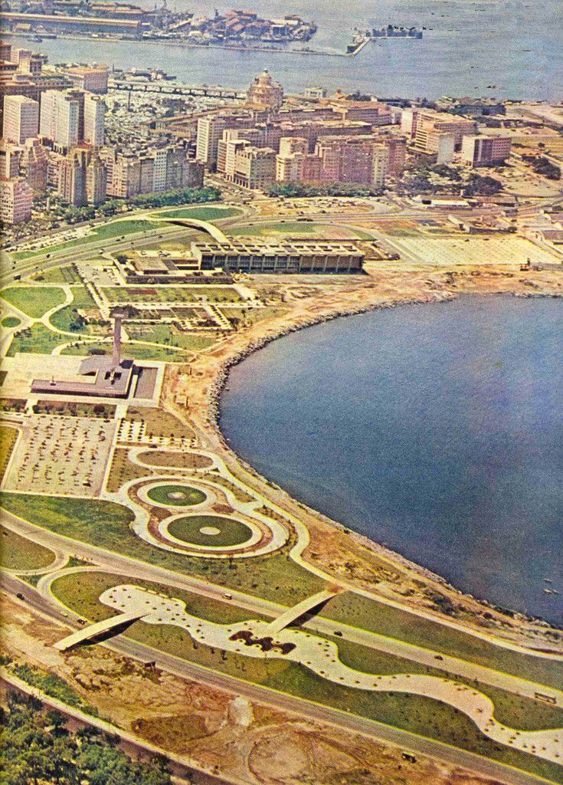
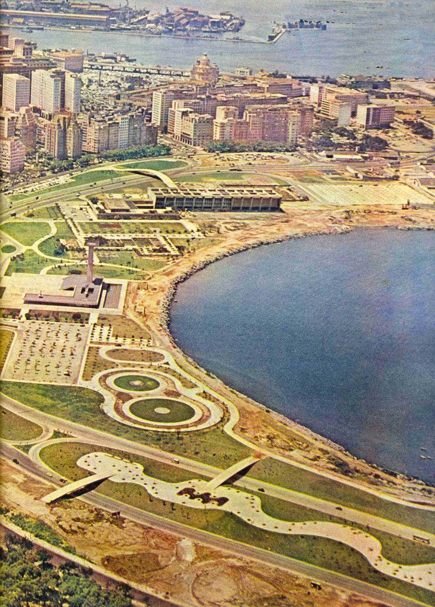

M U L H E R E S M O D E R N I S T A S
Lota Soares
 

Lota de Macedo Soares foi uma urbanista e paisagista que marcou o modernismo brasileiro com sua atuação no projeto do Parque do Flamengo, no Rio de Janeiro. Com uma visão inovadora e grande articulação política, Lota buscava integrar natureza e cidade, criando espaços públicos de convivência acessíveis e significativos.
Voltar para Home Page